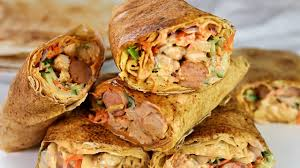

Shawarma

Homemade Shawarma
This recipe shows and describe how this delicious homemade shawarma was prepared.
Ingredients
These are the ingredients you`ll need to prepare his top rated homemade shawarma;
- Boneless chicken thighs
- Garlic powder
- Olive oil
- Lemon juice
- Sweet paprika
- Salt
- tomatoes
- Onions
- Thin pita bread
- Chopped parsley
- Pickled cocumbers
- White cabbage
- Mayonnaise
- Ketchup
Steps
- Step one: Firstly, I recommend preparing the meat - it doesn't take very long to cook but then it needs time to cool.
You can cut the chicken meat (or the one you have) in small bits or you can leave it whole pieces.
- Step two: To marinate, mix it with 3 tbsp olive oil, the juice from 1 lemon, 0.5 tsp garlic powder, 1 tsp paprika, 0.5 tsp turmeric, 1 tsp salt, 0.5 tsp coriander and 0.5 tsp Arabic spice mix.
- Step three: Now you can roast it quickly in a pan over the heat or in the oven, stir periodically until it's well cooked.
- Step four: Here is one other time when I baked the chicken thighs whole in the oven and used the same spices to marinate.
- Step five: When they are cool, cut them into thin slices.
- Step six: I usually bake the potatoes in a big oven pan while the meat cools.
I cut potatoes into wedges and I season with olive oil, salt and maybe some turmeric. Then I bake potatoes for about 20-30 minutes in the oven to 200-220 degrees C with the fan option on, which will crisp them up.
- Step seven: Until the meat and the potatoes are ready, I prepare the rest of the ingredients:
- the sauces - here, homemade mayonnaise, mixed with a bit of yogurt and garlic if you like it. And definitely your favourite ketchup, store bought or homemade.
- Step eight: - and the toppings: long slices of pickled cucumbers, cabbage salad (chopped cabbage with a bit of oil, salt and vinegar), slices of tomatoes and onions and a bit of chopped parsley.
Here the choice is all yours, for us all these are classic ingredients and they are a must when it comes to shawarma.
- Step nine: When everything is ready, we start to wrap the shawarma.
To stick it all together, I use aluminium foil, it's very efficient and I recommend it.
Tear up 4 pieces of foil, each one a bit longer than the pita bread diameter.
Home